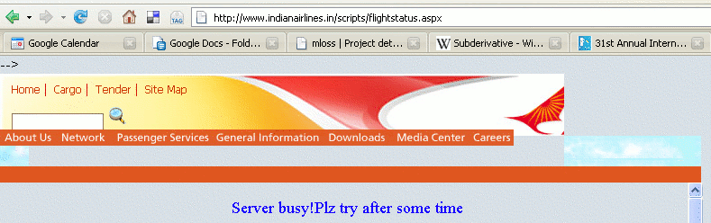
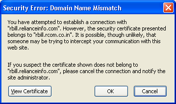
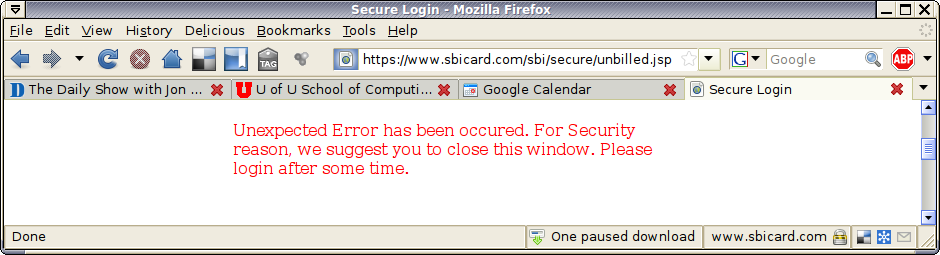
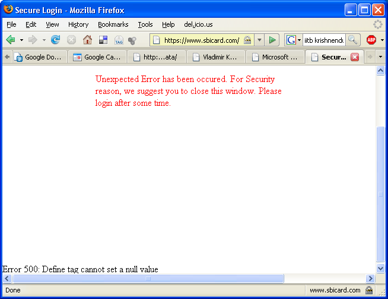
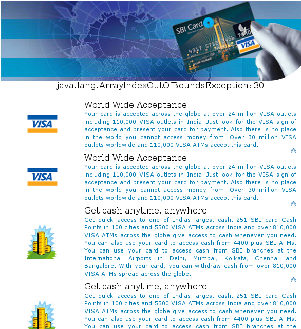
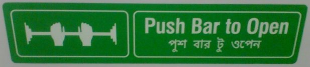

The sordid story of Indian Airlines, Air Indian, and Air India is well-known. Their slop is not limited to leaking toilets and engines on fire. It shows even in their Web site.
Leaving aside the shame of the number one national carrier's Web site being too overloaded to serve requests, how do we count the number of offsenses on the above page?
Reliance is (among other sins) a major mobile service provider in India. While trying to pay their bill online recently, my Web browser was unhappy thusly:
Imagine, a company having Reliance's size and reach cannot command enough care to make sure a site called rbill.relianceinfo.com does not offer a stale certificate made in the name of rbill.rcom.co.in. Money does not buy any care in India today.
Most people I know don't need Javascript or ASPX or Tomcat lessons when they do online business. Yet, more often than not, State Bank of India's Web sites greet you with screens like these:
"Unexpected Error"---who is that? And "has been occured [sic.]?" Why is Security capitalized? "Suggest you to"? If you think I am picking nits, consider that hundreds of millions of people turn in their hard-earned cash to SBI for safekeeping.
"Error 500: Define tag cannot set a null value" --- wow. What next, you call in and dictate to them the bug fix? And this one is even better: "java.lang.ArrayIndexOutOfBoundsException" --- now you know who keeps track of your cash.
Observe that the bug resulted in each ad blurb being presented twice! So how do you know the same is not happening with service charges?
Seen on an emergency exit in Apollo Hospital, Kolkata.
The hands might be pushing the bar on the door. Or they may be lifting weights. Unclear. But the worst part is the Bangla legend. It is not Bangla for "Push Bar to Open", it is a transliteration. Imagine a hapless victim trapped inside Apollo during a fire or earthquake, reading the "Bangla" and trying to figure out what it means.
Mail from me to GE/SBI credit card company:
Someone phoned me from SBI and asked for my PAN number. Is it safe to give it over the phone?
Reply from the trolls:
Dear Sir / Madam, Thank you for writing to SBI cards. We acknowledge the receipt of your email and we shall revert to you through call or email within 7 working days. We hope that you have mentioned the card / account number along with contact number/s in your communication, incase you have not, we would request you to please resend your correspondence on the same e-mail ID, without altering the subject line. Assuring you of our best services at all times. Warm Regards, SBI Cards Team
My story is far from unique. Check out just how retarded they are.
Mail from me to SBI Credit Cards (which is managed by GE Capital):
From: Soumen Chakrabarti Date: Sunday, January 21, 2007 01:09 AM To: feedback.gesbi@ge.com (feedback.gesbi@ge.com) Subject: passwd =card number does not work It has worked many times in the past, but the latest PDF file did not open with my 16-digit primary card number.
Reply from the trolls:
02 February 2007 Dear Mr Soumen Chakrabarti Thank you for writing to SBI Cards. This is with reference to your communication dated January 21 2007 regarding your SBI card account. Statement Of Account: We would request you to enter your 16 digit primary card number as a default password to open the statement dispatched at your e-mail address. Yours sincerely, Manager - Customer Service